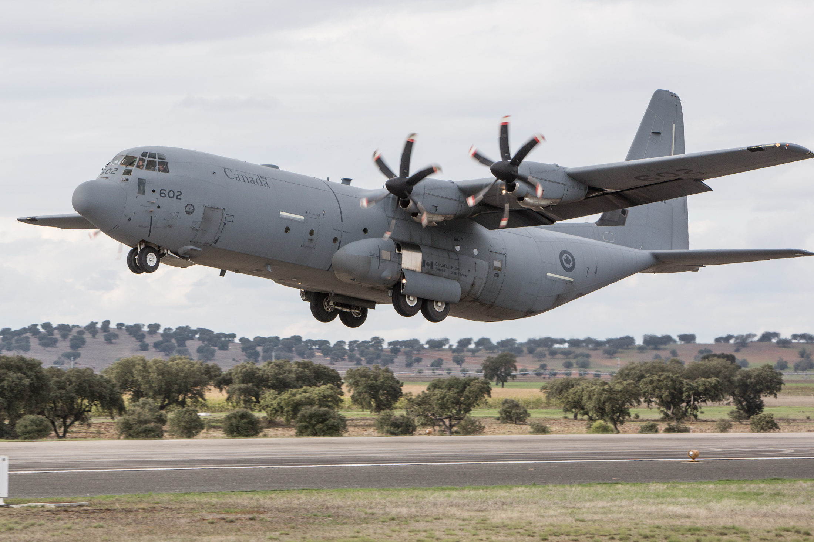

An Overview of my Interests
Aviation an flying interests me because it is so fascinating and ever growing. Flying takes so much skill and disciplne, something I believe I have displayed throughout my flight training. My long term goal is to pursue this hobby as a career in the US Air Force through Air Force ROTC here at NMSU. I want to fly the C130J to assist with humanitarian, personnel, and equipment operations all around the world.
Some Cargo and Fighter Aircraft I Like
- C130J Hercules
- F22 Raptor
- F16 Viper
- C21
My Favorite Aircraft

The C130 is one of my favorite cargo aircraft because of its insane versatility. It does not require a properly paved runway, as long as there is mostly smoothed out dirt. I also love this aircraft because I grew up close to an Air Force base when I lived in Germany, So I would often hear these planes and many others fly over my house. It was such an amazing sound to fall asleep to.